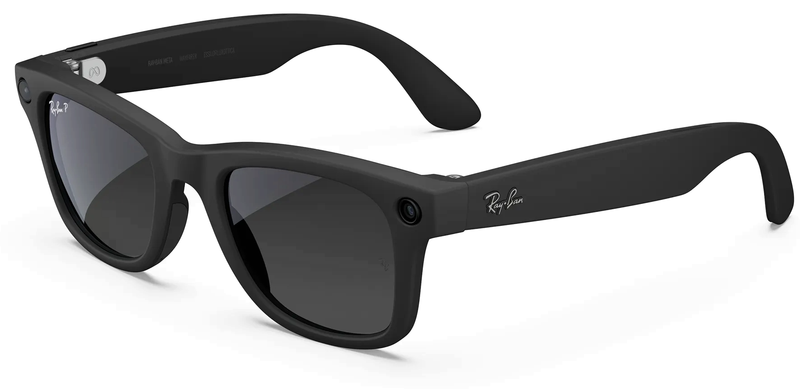
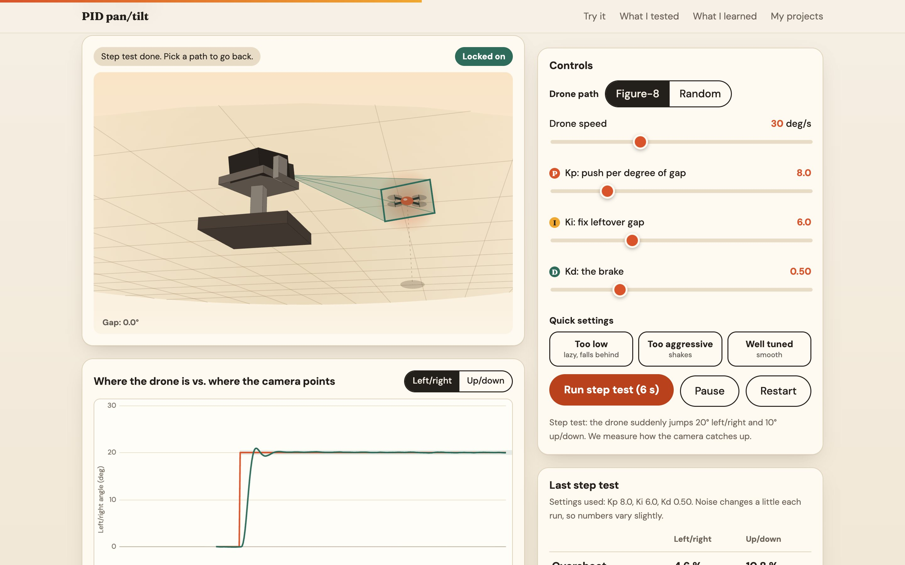
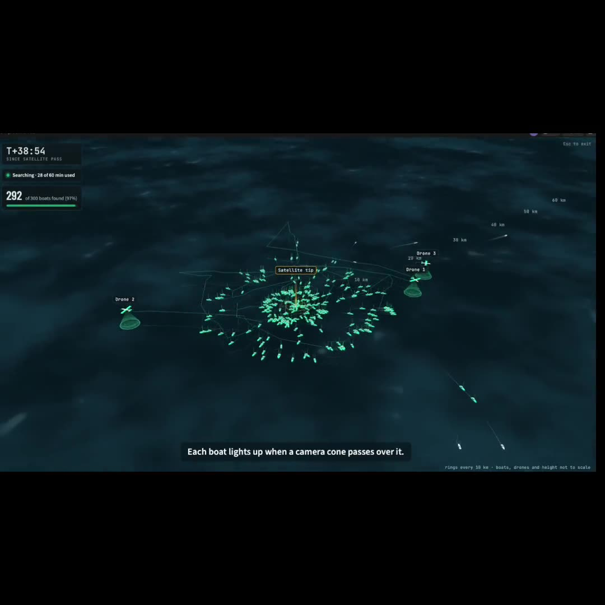

A drone that follows people
Person-following that works, and a delay I haven't explained yet.
Real tracking footage · 15 secPerson-following that works, and a delay I haven't explained yet.
Real tracking footage · 15 secA second brain that sees what you see,
and hears what you hear.

I built the Follow-Through agentA second brain that sees what you see, and hears what you hear.
The original Scene demo
A simulator for learning how a camera should turn to follow a drone.
Live model · original demo codeAn AI agent learns to land a rocket in a 2D simulator.
Actual recorded evaluation episodes
3 drones / shared mapHow long would a drone need to find a boat from a stale satellite tip?
Live demo playback · simulation onlyA prototype tracking system for my DJI Tello.
Real bench footage · work in progress2×Teagarden Jazz
Scholarship winner
~$2,000earned from drums